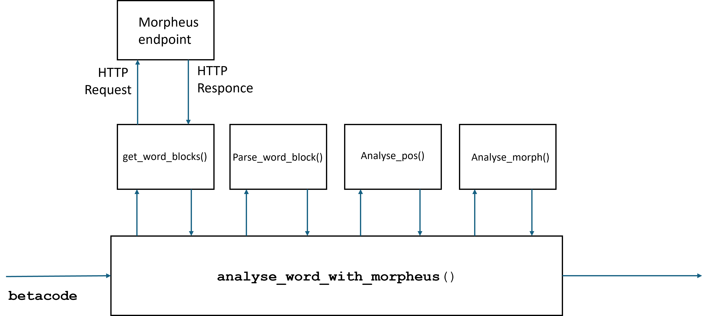

PROJECT DESCRIPTION
Morpheus and Morphkit
The analyser proposes; the integration layer retrieves and structures.
What Morpheus does
Morpheus is a morphological analysis system for Ancient Greek (and Latin). Given an inflected word form, its lexical and morphological resources are used to generate candidate analyses: possible lemmas and grammatical interpretations compatible with the form. A form may yield more than one analysis. Morpheus output is therefore a set of candidates; choosing the contextually appropriate interpretation requires evidence from the text and scholarly judgement.
The Morpheus engine is commonly exposed to clients through a separate HTTP API service. The Perseids Morpheus API provides this service layer; it can be run locally or in a container, for example using the published Docker image. Morphkit sends requests to an endpoint supplied by the user. It does not install or host the analyser.
What Morphkit does
Morphkit is the Python-side interface and processing layer. For a query, it requests Morpheus analytic text blocks, splits the response into individual parses, and converts the fields into dictionaries. It preserves raw analyser material and provides Beta Code and Unicode representations where available. Greek processing can add Morphkit-derived part-of-speech and SP-style morphology annotations.

Explain the numbered stages in Figure 2
- Input: the target form is provided in Beta Code transliteration.
- Morpheus query: Morphkit sends the word form to the configured Morpheus API endpoint.
- Morpheus response: the analyser returns zero, one, or multiple analyses in a structured text-block format.
- Block separation: Morphkit splits the raw response into individual analytic blocks.
- Parsing to data: each block is parsed into a Python dictionary containing the available lemma, stem, inflection, and other grammatical fields.
- Part-of-speech tagging: Morphkit infers a POS category from the parse fields.
- SP tag assignment: Morphkit derives a morphological tag in the SP schema used by the N1904-TF corpus.
- Result: a structured Python object contains the queried form and its analyses, retaining Morpheus data alongside Morphkit annotations.
Interpretive distinction
The candidate analyses originate with Morpheus. Parsing and normalization make those analyses available to Python; the added POS and SP-tag fields are Morphkit’s processing. Neither operation supplies syntactic or discourse context. For that reason, the returned set should be treated as analytical evidence for subsequent research, not as a contextually resolved annotation.